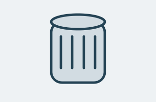
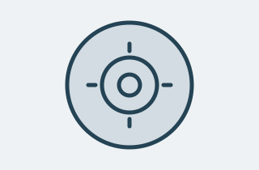
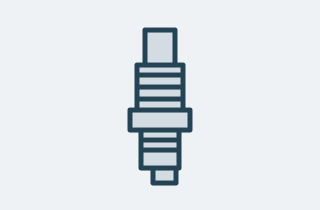
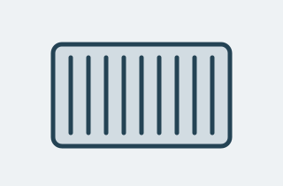
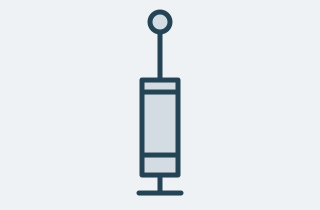
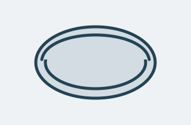

Фильтрация масла
Масляный фильтр
Задерживает загрязнения в системе смазки двигателя.
- Артикул
- AP-FL-001
- Категория
- Двигатель
- Параметр
- Резьба M20 × 1,5
490 ₽ учебная цена
ДЕТАЛИ, КОТОРЫЕ ВАЖНЫ
Изучайте назначение деталей, сравнивайте характеристики и находите нужную категорию в одном каталоге.
Посмотреть запчастиУчебный макет: форма отправляет параметры в адрес страницы. Фильтрация будет добавлена на следующем этапе.
ОТ ФИЛЬТРОВ ДО ПОДВЕСКИ
6 учебных позиций

Фильтрация масла
Задерживает загрязнения в системе смазки двигателя.
490 ₽ учебная цена

Тормозная система
Рабочая поверхность для торможения колеса колодками.
3 200 ₽ учебная цена

Система зажигания
Создаёт искру для воспламенения смеси в бензиновом двигателе.
650 ₽ учебная цена

Фильтрация воздуха
Очищает воздух перед поступлением во впускную систему.
890 ₽ учебная цена

Подвеска
Гасит колебания кузова и помогает колесу сохранять контакт с дорогой.
4 500 ₽ учебная цена

Привод агрегатов
Передаёт вращение от двигателя к навесным агрегатам.
1 100 ₽ учебная цена
ПЕРЕД ПОКУПКОЙ
Запишите марку, модель, год выпуска и тип двигателя.
Сопоставьте оригинальный номер с каталогом производителя и характеристиками.
Уточните совместимость по VIN в каталоге производителя или у специалиста.
«АвтоДеталь» — учебный справочник для автовладельцев и начинающих специалистов. Он показывает назначение, категории и параметры автозапчастей.
Все артикулы и цены вымышлены. Параметры приведены как примеры: они не подтверждают совместимость с конкретным автомобилем. Продажа и оформление заказов в проекте не предусмотрены.